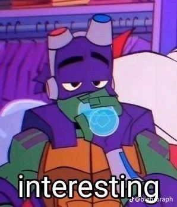
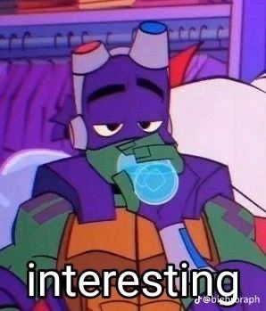

Gallery


 
Click to see more

Click to see more
Click to see a ✨silly✨ form
bottom text
List of enemiesLoom 16 Take corridor B Down the stairs past the ibis tapestry Sliding bookcase after bookcase shows the way to the hall Up the pole through a hole to the waterfall Donatello, with a book in his hand Saves the day and proves to everyone that he is the man! Po-po comes in and takes him away! But Donnie-D will live to fight another day!
Aditional sounds